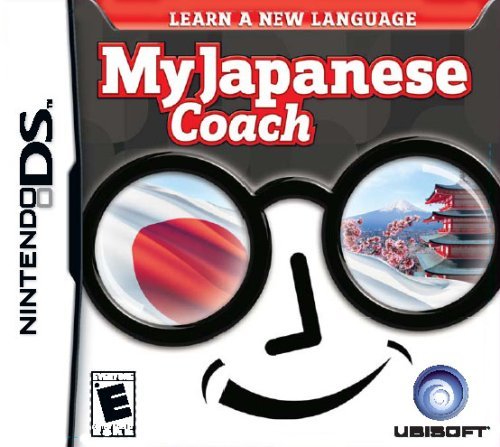

Background
I am a University graduate that is making a career change to a full-time front end developer.
I have worked in grocery stores, warehouses, as an English teacher, and in content analysis for one of the big social media companies!
I love learning new things and working with people.
Goals
I want to learn as many coding languages as I can but right now I am going to focus on:
- HTML
- CSS
- JavaScript
- Ruby
- Rails
I just want to build things and become more knowledgeable with all the coding languages out there so I can become unstoppable!
Hobbies
In my spare time I enjoy studying Japanese and translating Japanese folk stories into English. If I really feel like just relaxing, I just play video games!